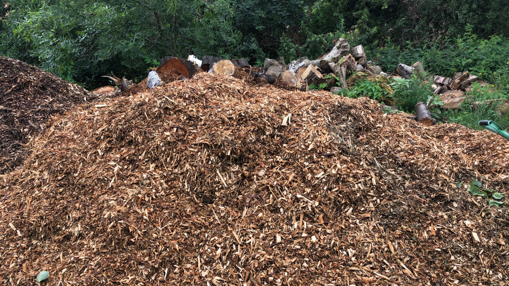

The impact of driving four school buses for two hours to pick up sticks and spread wood chip piles for Earth week
5/3/22 8:30AM

TORONTO, ONTARIO —
Concerns about climate change are growing. There is an excessive amount of Carbon Dioxide in our atmosphere, causing global warming, which has devastating effects on our planet. Climate change is arguably the biggest threat facing humanity, and our world is spiraling out of control. As climate change becomes one of the most pressing issues in our world, the fate of our planet is in the next generation.
For one week of the year(Earth week), people around the world focus on green living and confront the climate crisis. During Earth Week, a school held an event for all the grade 8 students. The school sent their grade 8 students on a one-hour excursion to Norval in four fully loaded diesel-powered school buses. At Norval, the students picked up sticks and spread wood chip piles. They were able to move some sticks away from the path so that people wouldn’t trip, and they also moved wood chip piles into muddy areas, to prevent people from getting their clothes muddy. This was incredible! In the future, we may be able to stop the detrimental effects of climate change if more people pick up sticks and spread wood chip piles. Furthermore, taking four, twenty thousand pound school buses to Norval and picking up sticks as well as spreading wood chip piles taught the students some new, useful skills that they wouldn’t have learned in school. It's inspiring to see the next generation take action against climate change. Although it took a long time to ride four school buses each producing tonnes of carbon dioxide – helping to contribute to the irreversible amount of carbon dioxide emitted in our world – the students learned how crucial picking up sticks and spreading wood chip piles were to saving humanity. So many students felt inspired to pick up more sticks and spread more wood chip piles so that in the future they can continue to do so and can finally help to counteract climate change.
We asked one of the students to share their experience picking up sticks and spreading wood chip piles. “Well, it was an incredible experience, and I’m glad we were able to make a positive impact on our world. I felt like this was a crucial experience since now understand that picking up sticks and spreading wood chip piles is how we can fight against climate change.”
Well, after reading about this, we can be assured that the fate of our planet is in good hands. With a greater number of people working together to pick up sticks and spread wood chip piles, while driving around emitting carbon dioxide, we may be able to reverse the effects of climate change and save our planet.